Методы создания шаблонов концов линий в Visio 2000 Ru, Visio 2002 Ru, Visio 2003.
 Концы линий, в отличие от самих линий, гораздо проще в построении и использовании. Мне редко попадались интересные концы линий, которые бы можно было привести в пример наиболее сложного исполнения, как реально применимые. Но самым интересным, для меня, оказался вот такой вот конец линии.
Концы линий, в отличие от самих линий, гораздо проще в построении и использовании. Мне редко попадались интересные концы линий, которые бы можно было привести в пример наиболее сложного исполнения, как реально применимые. Но самым интересным, для меня, оказался вот такой вот конец линии.
Он достаточно простой и состоит всего из 3-х элементов. Но сначала рассмотрим, какие бывают концы линий.
Их деление состоит в расположении самого конца линии относительно самой линии.
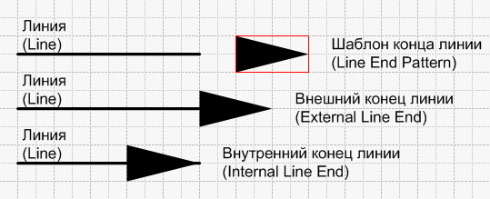
По этому признаку их можно разделить на внутренний конец линии и внешний. У внутреннего конца линии часть этого конца или даже весь шаблон расположена в участке самой линии.
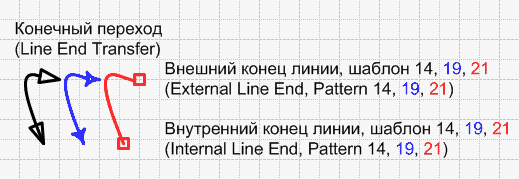
С одной стороны это удобно, но иногда может привести к искажениям, т.н. конечный переход. Внешние же концы линий формируются независимо от линии, но при достаточной сложности масштабности с ними становится неудобно работать.
Сами концы линии формируются с одной стороны шаблона, но при определенных условиях могут формироваться и с другой стороны, проходя весь шаблон (конечный переход). Чтобы этого не происходило, нужно использовать шаблон минимальной длины или вообще нулевой. Тогда при наличии смещения относительно шаблона искажений не будет, конечный переход отсутствует.
Итак, если посмотреть на данный конец линии, то сразу понятно, что это внешний конец линии, т.к. сама линия не проходит между элементами шаблона.
Сначала создаем шаблон конца линии. Для этого открываем Обозреватель чертежа(Drawing Explorer Window). Далее создаем Концы линии (Ru:Концы линии>Создать узор... En:Line Ends>New pattern...), называем и открываем его для редактирования. Линия в шаблоне будет считаться слева направо. Сначала нарисуем вертикальную линию длиной 10 мм и делаем из нее группу. Затем фигуру 40х80 мм как показано на рисунке.
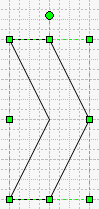
Потом вырезаем ее и открываем группу для редактирования из 1-й линии. Вставляем заготовку и делаем полное выравнивание.
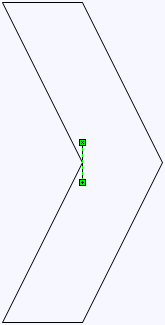
Удаляем линию, вставляем ещё 2 фигуры и ставим их встык.
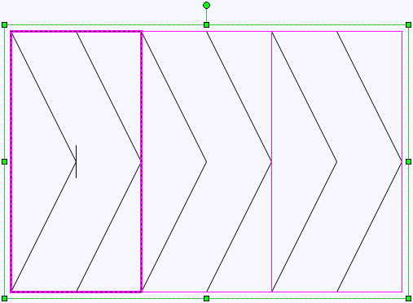
Теперь осталось залить их черным, убрать линии и все. Можно использовать.
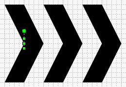
Закрываем окно редактирования, выбираем линию, выставляем концы линии и все. Все готово.
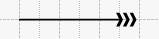
Можно ещё скопировать этот шаблон, убрав заливку (fill) и сделав толщину линий 0 pt получить линию типа 14 шаблона.
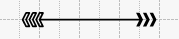
Мягкие тени (Microsoft Visio 2002 и выше)
Помимо векторных теней, заложенных непосредственно в Visio, можно использовать мягкие растровые тени. Для этого надо скопировать всю фигуру, объединить её, выставить тень, вырезать и вставить как изображение(Ru:Правка>Специальная вставка>Изображения независимые от устройств Windows En:Edit>Paste Special...>Device independent Bitmap). Сделать размытие(Ru:Формат>Рисунок...>Размытие En:Format>Picture...>Blur) и подложить под фигуру.
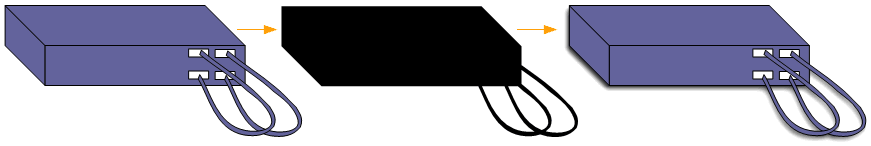
3D шары (Microsoft Visio 2002 и выше)
В одной из первых статей уже рассказывалось о создании 3D шаров с использованием CorelDRAW и вот теперь нашел способ делать его средствами Visio.
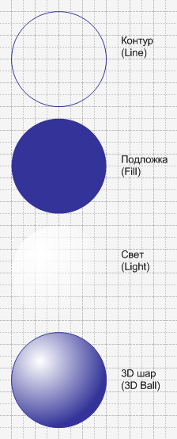
Он состоит всего из 3-х элементов, которые можно объединить в группу, поставить выделение только группы и получиться настоящий 3D шар. Сложность состояла только в элементе Свет. Делается этот элемент так:
- Составляется круг из 4-х кривых.
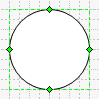
- Вносятся изменения в ТаблицуФигур (ShapeSheet)
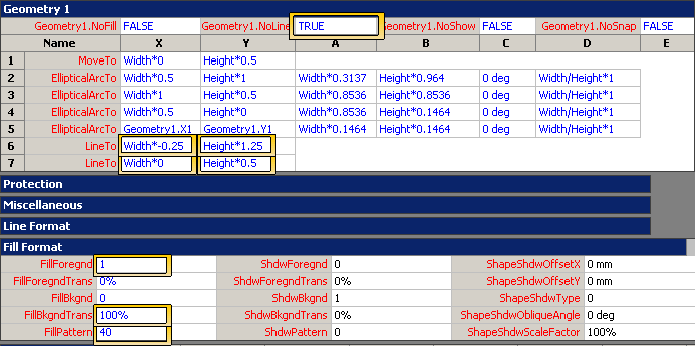
- И появляется фигура Свет
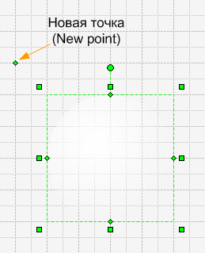
Советы по работе с программой Microsoft Office Visio 2003.
- Если выделить 1 объект и переместить маркер так, чтобы толщина была равна 0, то все получится, однако если выделить более 1-го объекта, то минимальная толщина будет равна шагу сетки. Если выделить 1-мерный объект (линию) и выбрав инструмент положения текста, то при редактировании текста он будет отсчитываться с нулевой толщины, вне зависимости от выбора маркера надписи.
- При вставке текста в фигуру, начиная с Visio 2003 вставленный текст обладает стилем исходника, особенно из других фигур. Чтобы этого не происходило, необходимо выделить фигуру, выбрать инструмент редактирования текста (F2), далее в меню выбрать Edit>Paste Special и выбрать Unformatted Text. Если текст стал нечитаемый или стал в виде вопросительных знаков, то повторить действия, но выбрать Unformatted Unicode Text.
- Существует 2 типа вставки текста между фигурами Visio:
- Выделение фигуры и копирование. В этом случае нужно выделить первую фигуру, скопировать, затем выделить вторую фигуру, выбрать инструмент редактирования и просто вставить текст из буфера. Если не выбирать инструмент редактирования текста, то при вставке просто появится копия исходной фигуры.
- Выделение текста и копирование. В этом случае нужно выделить непосредственно текст первой фигуры, а потом можно просто выделить вторую фигуру и вставить из буфера текст. Этот текст автоматически станет текстом фигуры.
Т.е. в данном случае если случайно будет скопирована фигура, а не ее текст, то не надо будет вставлять фигуру, потом выделять непосредственно текст, копировать и вставлять во вторую фигуру.
- При View as vertical не работает распределение. Хотя Выравнивание работает.
- Рассоединение(Shape>Operation>Trim) составного объекта дает, в сущности, тот же обратный результат, с помощью которого он был создан.
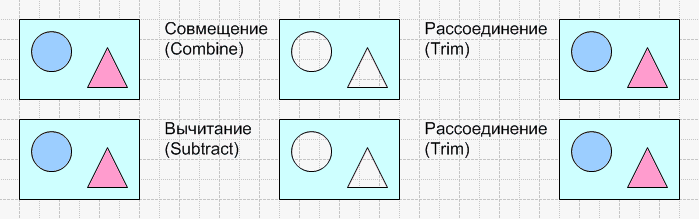
- Группировка объекта с направляющими, дает их исчезновение, и при разгруппировании(Ungroup) появятся очень удобные направляющие и при работе в группе.
- Сделать Формат по образцу можно просто выделив 1-ю фигуру и остальные. Т.е. не сначала выделить образец, потом нажать на панели инструментов «Формат по образцу», а сразу, т.к. в отличии от других приложений, Visio различает 1-ю выделенную фигуру.
Примеры из статьи.
В начало раздела
Предыдущая статья
Следующая статья
Автор: Ничков Алексей (a.k.a. Digitall)